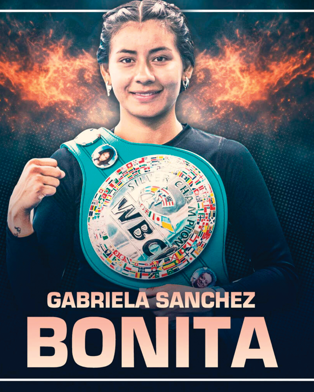

← Nuestros peleadores
Gabriela Sánchez · Bonita

Puebla, Puebla · 13-6-0, 1 KO’s
Una diseñadora gráfica de profesión, que fue llevada por la vida al boxeo, tras sufrir agresiones físicas y violencia; como una forma de defensa personal pero mostrando cualidades desde sus primeros combates, logrando representar a Puebla en Olimpiadas Nacionales antes de su debut profesional, donde rápidamente se cruzó con los grandes nombres de la división forjando el carácter y experiencia necesarios para conquistar en condición de visitante el título mundial Silver WBC, al que dio brillo convirtiéndose en la consentida de Puebla, con tres llenos impresionantes de 15,000 fanáticos en sus defensas antes de buscar el campeonato mundial interino WBC, mismo que conquistó en un trepidante choque con la argentina Tamara De Marco.